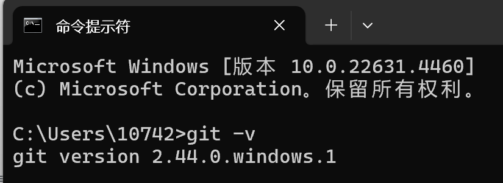
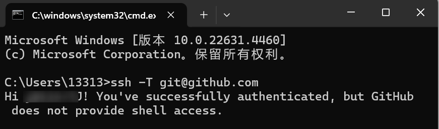

Git 安装
- 打开 Git 的官方网站：https://git-scm.com/download/win。
- 根据操作平台版本（32 位或 64 位）选择适合的安装包，点击下载。
- 下载完成后，双击安装包启动安装程序。
- 按照安装向导完成安装，建议保留默认设置（包括将 Git 添加到平台 PATH）。
- 安装完成后，在终端（或 cmd 命令提示符）中输入git -v，出现如下图所示版本号即表示安装成功。 
- 生成 SSH 密钥
-
打开 cmd 命令提示符或终端，输入以下命令生成 SSH 密钥：
ssh-keygen -t rsa -b 4096 -C "your_email@example.com"将命令中的your_email@example.com替换为您的 GitHub 注册邮箱。 -
在提示输入存储位置时，直接按 Enter 回车键使用默认路径（通常为
~/.ssh/id_rsa）。 -
再按两次 Enter 可忽略 passphrase（密码短语）设置。
-
创建完成后，前往 SSH 文件夹（
~/.ssh/id_rsa）查看公钥文件id_rsa.pub（可直接右键选择使用记事本打开）。 -
复制其中的公钥内容（以
ssh-rsa开头的文字）。 - 登录到 GitHub 管理平台 https://github.com ：
在右上角点击头像，选择 Settings（设置）。在左侧导航栏选择 SSH and GPG keys，点击 New SSH key。粘贴公钥内容，设置描述名称（如“Libra 项目”）后点击
Add SSH key确定。 - 配置完成后，使用
ssh -T git@github.com命令测试 SSH 是否成功连接 GitHub： 若第一次使用，需手动输入yes并按 Enter 回车确定。出现如下图所示提示即表示连接成功。 